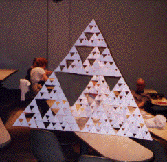

Purpose To build a 3-dimensional model of a fractal tetrahedron, illustrating scaling at different levels.
Materials 256 envelopes size 3 5/8 by 6 1/2 inches, ruler, pencil, scissors, tape
Sample Here is a Sierpinski tetrahedron constructed from 256 envelopes.
|  |
Conclusion This makes for a good cooperative project. Individuals make several unit tetrahedra and then work with others to complete the full tetrahedron. The finished product is impressive and quite sturdy, but subject to the familiar effects of humidity on paper. It is a good opportunity for photographs and for discussion of why the completed object is a fractal, and how fractals in nature differ from mathematical fractals.
An interesting aside is to compute the dimension of the limiting case of the mathematical fractal suggested by this tetrahedron structure. Since the mathematical fractal tetrahedron is self-similar, we can use the similarity dimension formula
D = log N(r)/log (1/r),
where N(r) is the number of scaled
copies of size r. We see N(r) = 4 and
Here is a gallery of pictures from a recent workshop.